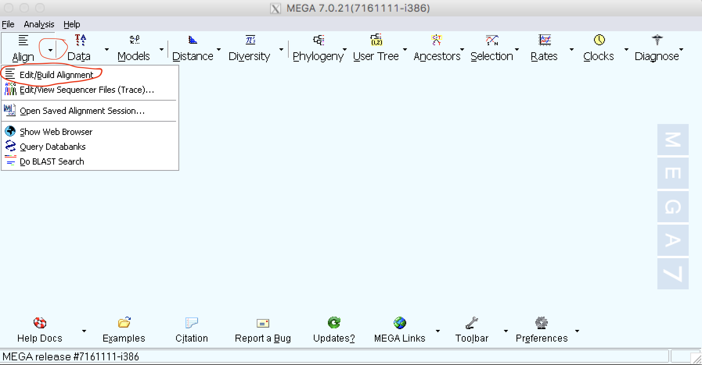
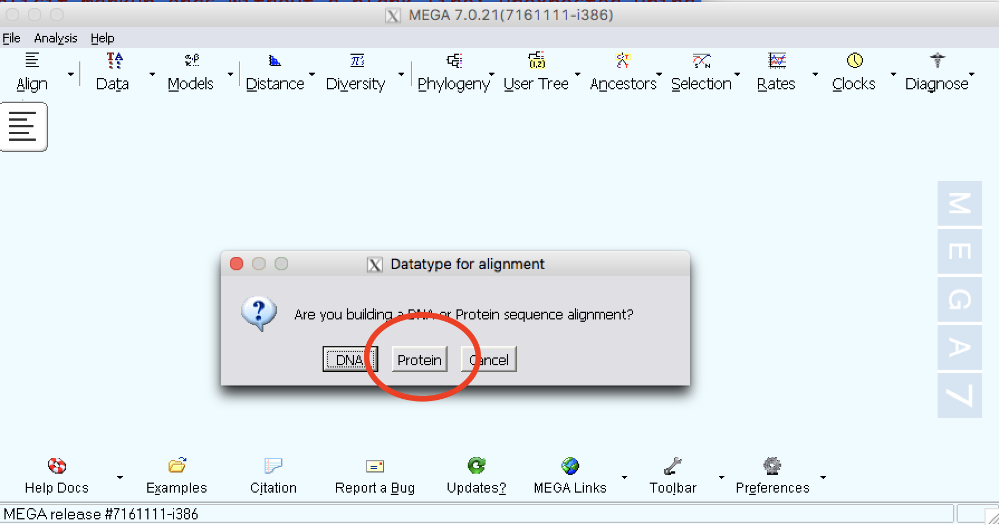
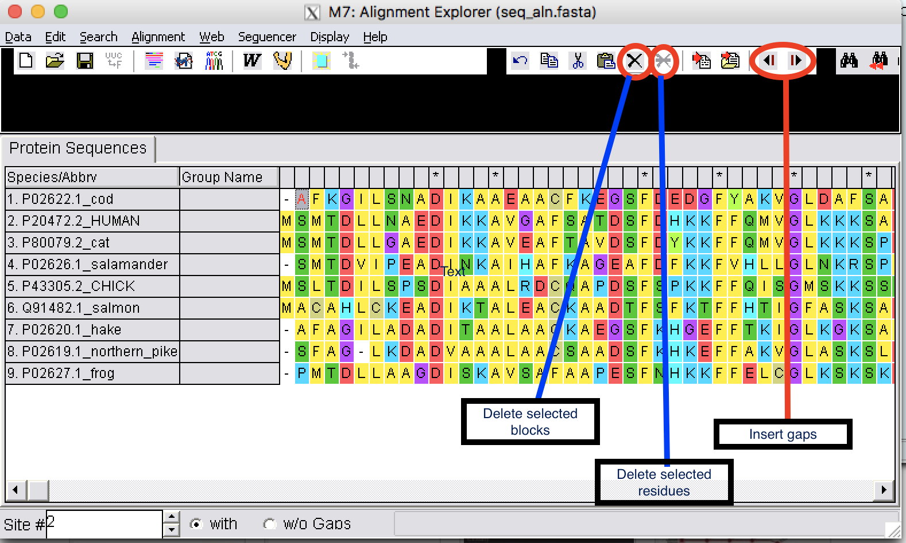

Getting started with MEGA
Note
There is an excellent tutorial on the MEGA site and this is excerpt of the tutorial for the exercise.
How to make an alignment using MEGA
| Step 1: | Open MEGA software and you will see a screen like in the following figure: |
|---|
| Step 2: | Click on the small arrow on the “Align” tab |
|---|
| Step 3: | Click on ‘Edit/Build alignment’ |
|---|

| Step 4: | Select a new alignment. |
|---|

| Step 5: | From file open, select “seq_align2.fasta” and open file. |
|---|
| Step 6: | From Edit, select all sequences. To do an alignment using Muscle, click on Muscle tab. |
|---|
| Step 7: | Use default options and perform an alignment. To learn more about the options, go to the MEGA manual. |
|---|
Edit the alignments
| Step 1: | You can insert gaps, delete blocks, and delete residues. |
|---|
Be very careful when you edit a sequence alignment. It should be biologically meaningful.

Exporting MSA
Mega allows to export the MSA in different formats.